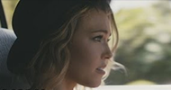

FILTERS
ALL
MALE
FEMALE
MIXED
#1
Uptown Funk
Mark Ronson ft. Bruno Mars
(+0) Lyrically Neutral
#2
Thinking Out Loud
Ed Sheeran
(+3) Seen as Equals
#3
See You Again
Wiz Khalifa ft. Charlie Puth
(+0) Lyrically Neutral
(+0) Not Gender Specific
#4
Trap Queen
Fetty Wap
(+3) Seen as Equals
#5
Sugar
Maroon 5
(+1) Important Person
#6
Shut Up and Dance
Walk The Moon
(+1) Important Person
(+1) True Love
#7
Blank Space
Taylor Swift

(+2) Female Dominance
#8
Watch Me
Silento
(+0) Lyrically Neutral
#9
Earned It
The Weeknd
(-2) Sex Object
(+1) Mutual Love
#10
The Hills
The Weeknd
(-2) Sex Object
#11
Cheerleader
OMI
(+1) Important Person
#12
Can't Feel My Face
The Weeknd
(+0) Lyrically Neutral
#13
Love Me Like You Do
Ellie Goulding
(-2) Sex Object
(+1) Mutual Love
(+2) Independence
#14
Take Me to Church
Hozier
(-2) Sex Object
(+1) In Control
#15
Bad Blood
Taylor Swift ft. Kendrick Lamar
(+0) Lyrically Neutral
#16
Lean On
Major Lazer and DJ Snake ft. MØ
(+0) Lyrically Neutral
#17
Want to Want Me
Jason Derulo
(-2) Sex Object
(+1) Mutual Love
#18
Shake it Off
Taylor Swift
(+2) Independence
#19
Where Are U Now
Skrillex and Diplo ft. Justin Bieber
(+0) Lyrically Ambiguous
#20
Fight Song
Rachel Platten

(+1) In Control
(+2) Independence
#21
679
Fetty Wap ft. Remy Boyz
(-2) Sex Object
#22
Lips are Movin
Meghan Trainor
(+2) Independence
#23
Worth It
Fifth Harmony ft. Kid Ink
(-2) Sex Object
(+1) In Control
#24
Post to Be
Omarion ft. Chris Brown and Jhené Aiko
(-2) Sex Object
#25
Honey, I'm Good
Andy Grammer
(+1) Important Person
#26
I'm Not the Only One
Sam Smith
(+0) Lyrically Neutral
#27
Good for You
Selena Gomez ft. A$AP Rocky
(-2) Sex Object
(+1) In Control
#28
All About That Bass
Meghan Trainor
(+1) In Control
(+2) Independence
#29
Style
Taylor Swift
(+0) Lyrically Neutral
#30
Hotline Bling
Drake
(-1) Promiscuity